For Sale
If you are interested in any of the items on sale, please contact me by:e-mail: example@hotmail.com
mobile phone: 090-XXXX-XXXX
As I will be leaving Kochi earlier than originally planned,
items must be sold by Friday July 9th, 2004 and picked up by Sunday July 11th, 2004
| 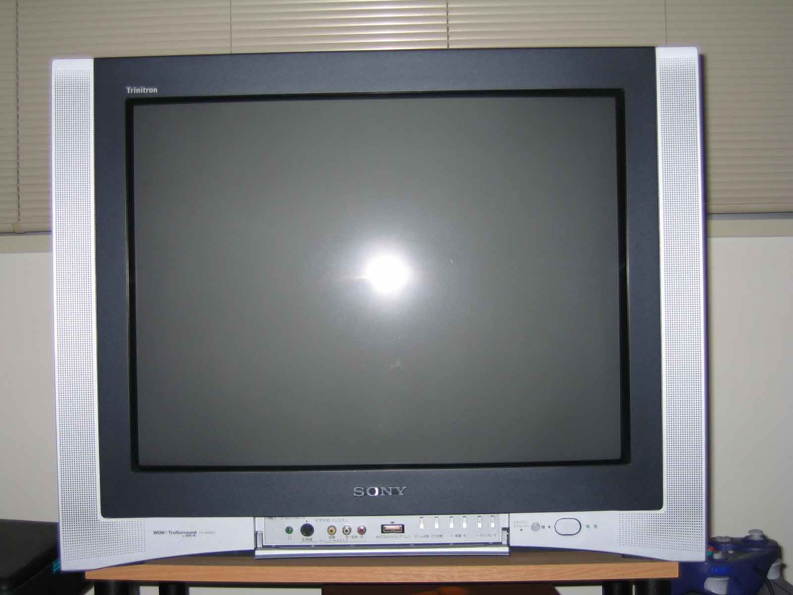 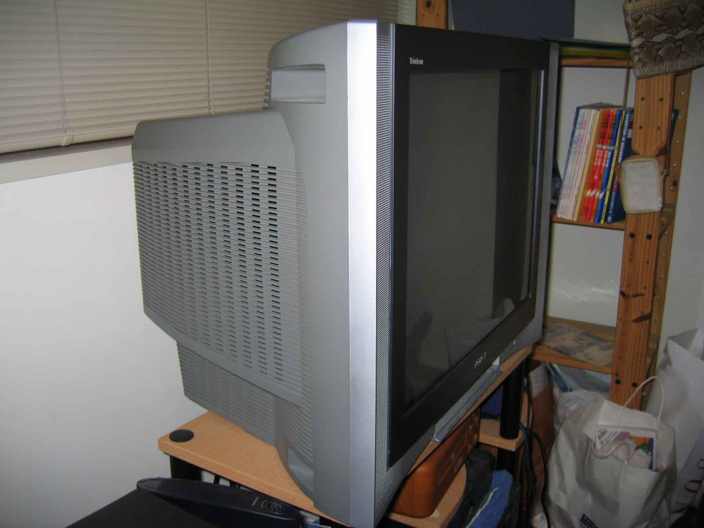 |
| 25 inch Sony Trinitron Wega Television set (cable ready; model no. KV-25DA55). DVDs, video games, and bs-hi digital broadcasts look absolutely pristine on its high-quality screen. Very sad to part with this. Includes everything that came in the box, sans box. ¥25,000 o.n.o. |
| 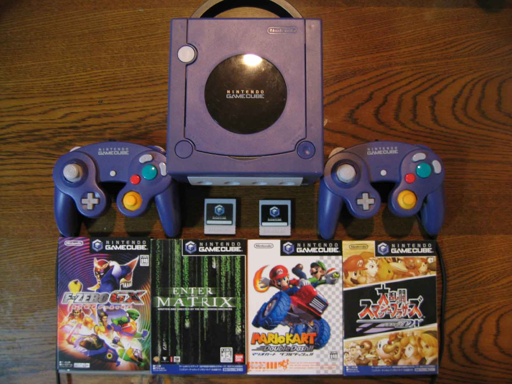 |
| Nintendo Gamecube. Includes 2 controllers, 2 memory cards, and 4 games: (L to R) F-Zero GX, Enter the Matrix, Mario Kart Double Dash, Super Smash Brothers. All items have their original packaging. 3 of the 4 are two player games that are worth keeping after completion, plus you can get classics like Zelda, Metroid, Pikmin, and Viewful Joe for dirt cheap second-hand ¥15,000 o.n.o. |
| 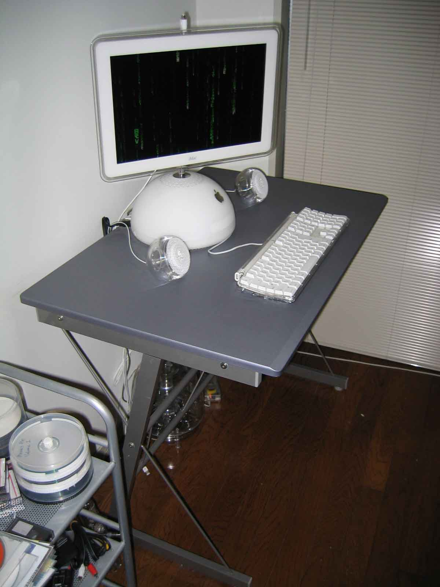 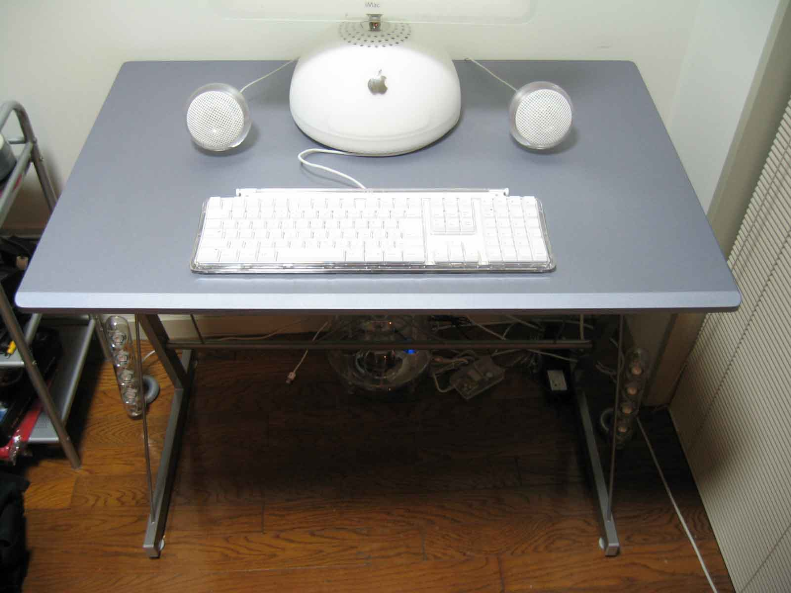 |
| Sturdy Metal Desk. Fit the iMac perfectly and is a great height for comfortable study (iMac not included in this purchase). Able to be assembled/disassembled simply with a small screwdriver (included) ¥3500 o.n.o. |
| 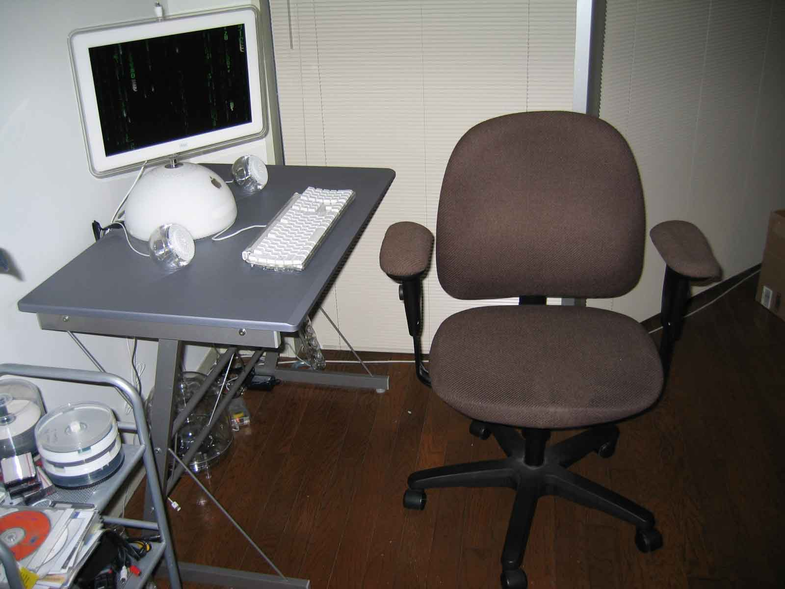 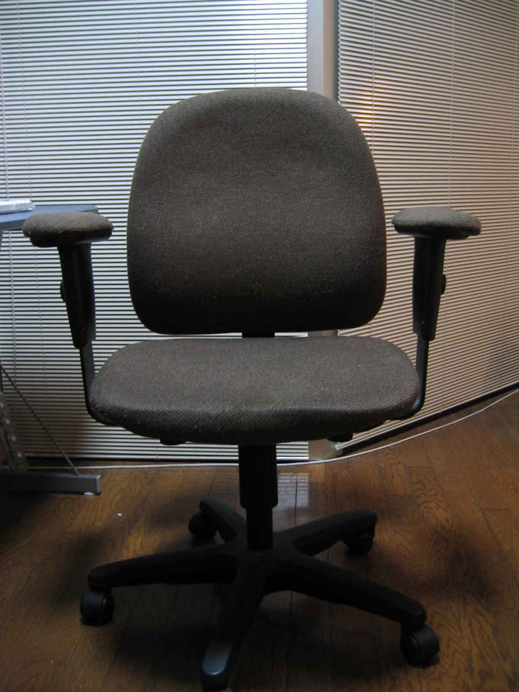 |
| Ergonomic Chair. Comfy, versatile, and easy on the back. Perfect for long hours in front of the computer and/or studying to pass JLPT for the nth time ¥2000 o.n.o. |
| 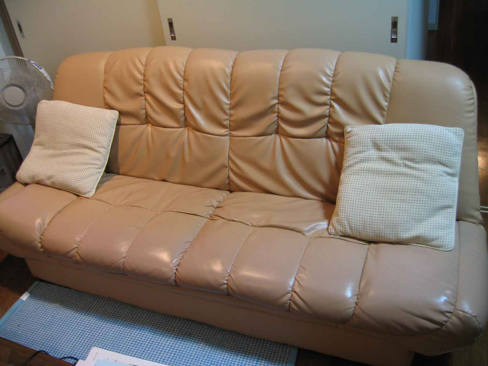 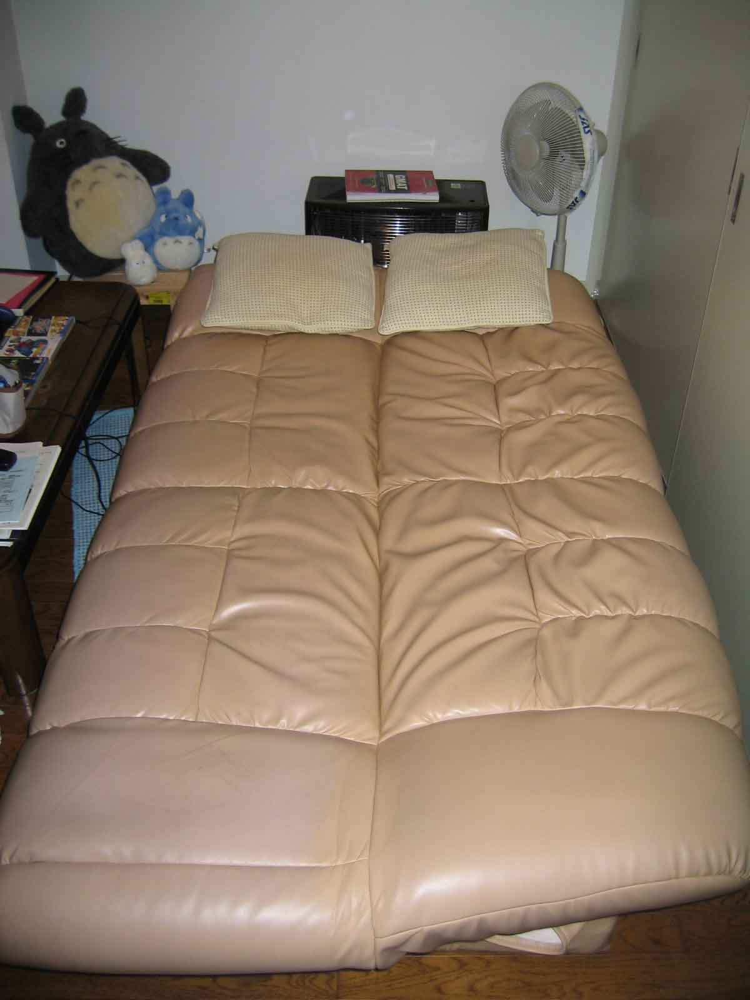 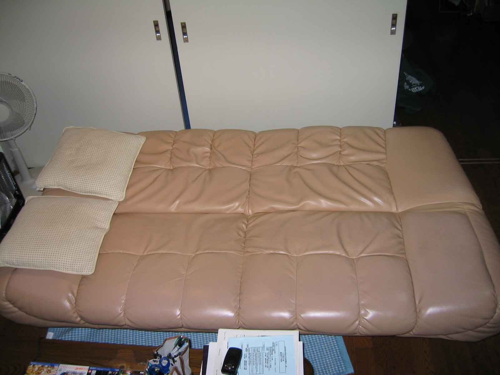 |
| Faux Leather Sofa Bed (2 meters long; comes with pillows and single bedsheet). This couch has been my best inanimate friend throughout JET. Whether lazying about in front of the TV or hosting overnight guests, it has been an essential element in making my stay more comfortable. Sitting on the floor blows, you know you need a sofa. ¥25,000 o.n.o. |
| 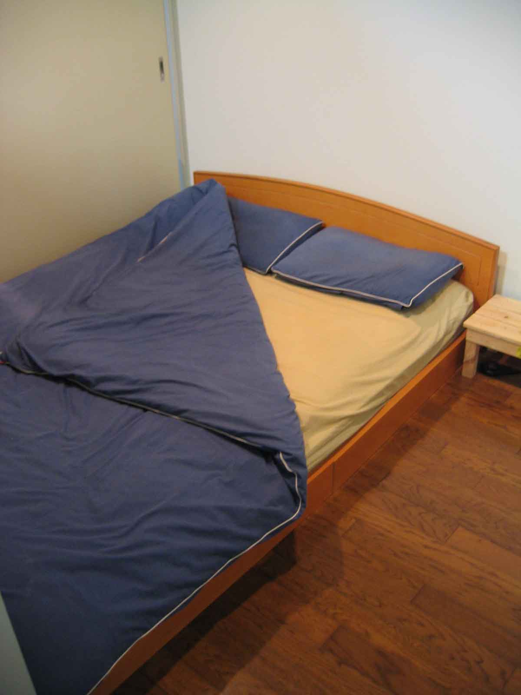 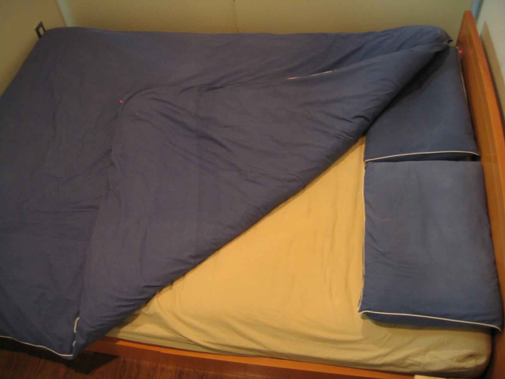 |
| Double Bed (comes with 2 double bedsheets and twin mini-bedtables). Who needs floormats when you can have a double bed to stretch out in? The bed is a spring-loaded mattress with a futon on top, and a blue continental quilt. Don't believe me that it's comfy? Come on down to Kochi City and try for yourself before you make up your mind. Pillow cases and quilt slide off easy so no problems to wash. ¥20,000 o.n.o. |
| 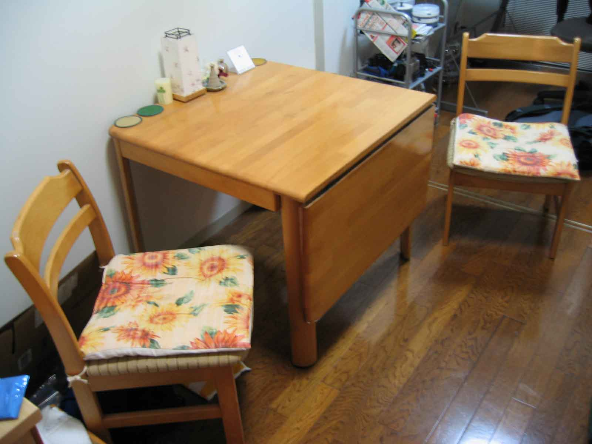 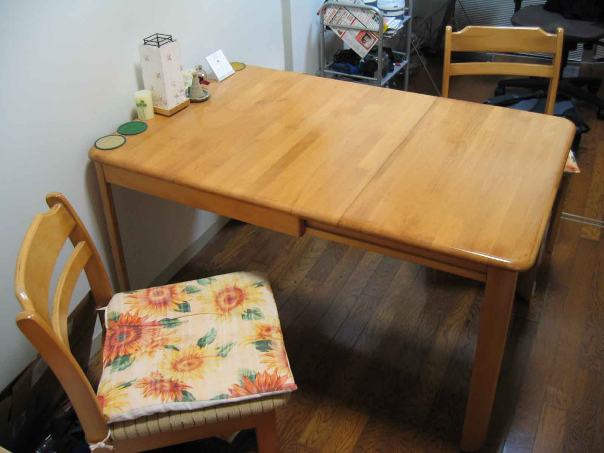 |
| Dining Table and 2 chair set. Table folds out for that extra bit of room. ¥2000 o.n.o. |
If you are interested in any of the items on sale, please contact me by:
e-mail: example@hotmail.com
mobile phone: 090-XXXX-XXXX
As I will be leaving Kochi earlier than originally planned,
items must be sold by Friday July 9th, 2004 and picked up by Sunday July 11th, 2004